TopoMojo: Building Virtual Labs
TopoMojo: Building Virtual Labs
This documentation introduces users to the TopoMojo environment and provides information necessary to launch existing labs and create new topologies.
Overview
TopoMojo is a web application used for creating and delivering cybersecurity training labs and exercises. With TopoMojo, users can build and deploy labs in an isolated and secure virtual-machine environment.
TopoMojo allows for the same functionality and connectivity that users would experience with real, physical devices. Network topologies can utilize not only IP and Ethernet, but also custom protocol solutions like 802.11 wireless packet simulation.
New topologies can be rapidly deployed using existing templates or built from the ground up with user-provided ISO's and VM specifications.
Go to the TopoMojo repository: github.com/cmu-sei/TopoMojo.
TopoMojo Concepts
Workspace and Gamespace
In a workspace, engineers add VMs, save updates, author guides, and configure questions/answers to turn the topology into a lab or challenge.
Users play through a lab in a gamespace. Users get their own, isolated, read-only copies of all resources in the workspace. Players in a gamespace can interact with VMs and answer questions to complete the lab, but they cannot save changes to the environment.
Isolation Tag
A unique identifier TopoMojo uses to identify a workspace or gamespace.
- For a workspace: the isolation tag is the workspace id visible above the Workspace Title when viewing the workspace. See screenshot 1.
- For a gamespace: the isolation tag is the gamespace id partially visible from the Admin, Gamespaces view (see screenshot 2) and fully visible in the URL bar when viewing a VM console that belongs to a gamespace (highlighted in screenshot 3).
The id's used for isolation tags uniquely identify each workspace and gamespace in the TopoMojo database. Additionally, each resource (e.g., virtual machine, virtual network, etc.) associated with a workspace or gamespace will have the isolation tag appended to the resource name.
For example: a VM named challenge-sever in the gamespace with id (isolation tag) 18048abc66f142e1804732082f4051d2, has the name challenge-server#18048abc66f142e1804732082f4051d2. Appending the isolation tag to workspace/gamespace resources ensures environment isolation -- VMs and networks cannot have the same name, so there will never be accidental sharing of VM/network resources.
screenshot 1
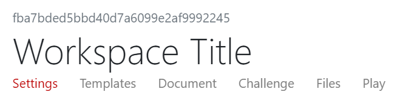
screenshot 2
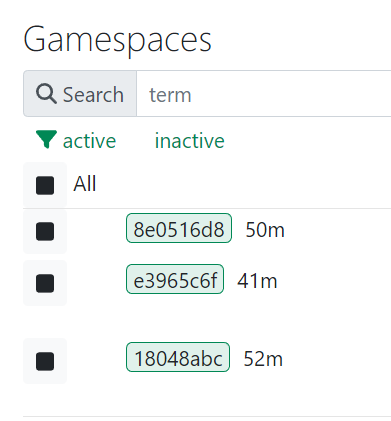
screenshot 3
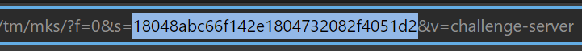
Challenge
The term challenge refers to when users integrate Gameboard and TopoMojo to execute a cyber competition. In this scenario, Gameboard is a consumer of content made in TopoMojo. More information on that is available elsewhere in the documentation.
Getting Started
What's New
Get the latest TopoMojo source code and its accompanying release notes from the GitHub repository.
Installing
Installing TopoMojo is a matter of installing it's Helm chart on the SEI's GitHub page. The CMU-SEI Helm charts repo is a public repository on GitHub for anyone to access and use. The TopoMojo chart contains two sub-charts: topomojo-api and topomojo-ui. The api and the ui are different apps and you should deploy them separately.
Info
This structure is consistent with the other Foundry apps: there is an api piece and a ui piece.
TopoMojo values.yaml: Contains default configurations for the api and the ui. To deploy TopoMojo, configure the Values.yaml file according to your needs and helm install TopoMojo.
Persistent/Shared Networks
We recommend having a persistent/shared network available to all TopoMojo workspaces/gamespaces. The administrator defines a persistent/shared network at the time they deploy the TopoMojo API.
For example, you could create a persistent/shared network that provides internet access to all TopoMojo VMs that specify the network name. bridge-net typically signifies bridging the traditionally isolated TopoMojo VM to the internet.
Use the Pod__Vlan__Reservations environment variable to define the name of a persistent/shared network. See screenshot 1 below.
Pod__Vlan__Reservations__0__Id:defines the vlan Id (from the hypervisor) that corresponds to the shared/persistent network.Pod__Vlan__Reservations__0__Name:defines the name of the persistent/shared network.
You can define more than one shared/persistent network by incrementing the variable name (Pod__Vlan__Reservations__1__Id and Pod__Vlan__Reservations__1__Name). To connect VMs to shared/persistent networks, users must have at least Builder permissions.
A note about bridge-net
"bridge-net" is not always reserved. It is reserved by the SEI because we configured it that way, and it is convenient to refer to in the TopoMojo documentation.
screenshot 1:
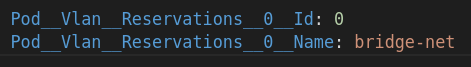
Finding a Space
Once you're in TopoMojo, you can browse for existing TopoMojo workspaces and gamespaces. In the left panel (Ctrl-L) , enter terms into the Search field. TopoMojo automatically searches for a workspace or a gamespace that matches your terms. Click workspace or gamespace to filter results. TopoMojo sorts labs alphabetically by name.
Select a gamespace, then click Start. You can "play" the lab now -- start by reading the instructions and launching a gamespace resource. You can end play by clicking End. You can invite others to play in your gamespace. Click Invite to copy an invitation link. Provide the other person(s) with the link.
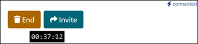
The timer counts down how much remaining time you have before the gamespace expires.
Building a New Workspace
The workspace interface contains six tabs: Settings, Templates, Document, Challenge, Files, and Play. To build a new TopoMojo workspace click Home, then New Workspace.
Settings
The Settings tab holds the metadata for your lab.
Title: The title of your workspace; remember that the title should be unique.
Description: A brief description of your workspace to display when browsing titles. The Description is viewable to everyone, and when used in conjunction with Gameboard, visible there too.
Tags: Internal metadata to add data about the lab; for example, if using for a cyber competition, then your tag may be something like cyber-cup c01. Now, you can search for that challenge (or lab) using that tag.
Authorship: Your name and the names of others who may have assisted you.
Audience: A space-delimited list of administrator-defined groups that have permission to deploy gamespaces from the workspace. Administrators define an audience with any name here. Users can deploy gamespaces from the workspace only if their scope matches one of the provided audiences. Everyone is the global audience that allows all users to deploy gamespaces from the workspace.
Duration: Recommended length of time in minutes that it takes to play through a gamespace launched from your workspace.
Collaboration: To share your workspace with others click Generate invitation. Paste the link into an email and send. TopoMojo shows Collaborators here alongside the author. When a collaborator connects to your workspace, you'll see them connected in the top right corner of the workspace.
Clone: Clones your workspace; TopoMojo appends -CLONE to the title of the new workspace.
Delete: Deletes an existing workspace.
Templates
The template selector allows you to add virtual machine templates to your workspace. The templates here are "starting point" virtual machines that you can customize. There are blank disc templates for installing your own operating system plus other VMs with operating systems pre-installed.
Adding and Editing Templates
To add a template to your workspace:
- On the Templates tab, click Add Templates.
- Search for and add the templates you need for your topology.
- Click the edit icon to expand the template(s) to make changes.
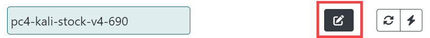
Template Field Definitions
The list below explains the fields in the VM template.
- Name: Edit the name here. Remember that the name should be unique within the workspace.
- Description: The Description should contain the credentials for the virtual machine and the purpose of the virtual machine.
- Networks: The Networks fields allows you to add a space-delimited list of networks where the virtual machines connect. These names should be the same for all systems in your lab that need to connect to the same network.
- Guest Settings: List key value pairs in the form of
key=valueto pass data into deployed VMs via VMware guestinfo variables or the QEMU Firmware Configuration Device for Proxmox. The Guest Settings field uses VMware guestinfo Variables to inject content into virtual machines. Place key/value pairs here. The key is the name of the guest variable you want to define, and the value is the value, information, setting, of the variable. For example,var1=testis a guest setting named "var1" with a value of "test".
Transforms allow you to define dynamic variables that TopoMojo generates based on certain criteria or types. To add the concept of transforms here, select Challenge and see Transforms. The info icon in the Transforms section describes the transform types that are available. See also TopoMojo Transforms.
Use VMware Tools, such as open-vm-tools and the vmtoolsd command, to access guest info variables from a Gamespace VM. See Open VM Tools and VMware Tools daemon help.
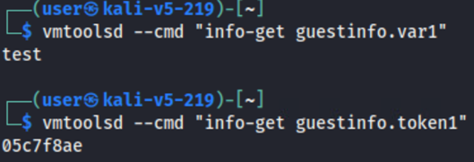
- Replicas: Set this number to deploy copies of the same VM template. For example: to deploy three copies of a VM template when TopoMojo starts a gamespace, set Replicas to "3". To deploy one copy of the VM template for each team member that TopoMojo starts the gamespace for, set Replicas to "-1".
- Variant: Specify that TopoMojo should deploy the VM template only for a particular variant. For example, if the Variant is "2", TopoMojo deploys the VM template only when it launches variant 2 of the challenge.
- ISO: Use the ISO Selector to attach an ISO image to your virtual machine.
- Console Access: Toggle Hidden to hide a specific VM from being accessible by the person completing the lab. This is useful for systems like a DHCP server that do not require user interaction.
- Linked: Unlinking creates a new a new copy of the template which you can save and customize. Toggle Unlink for any virtual machine that will not use the default disk included with the template.
- Delete Template: Deletes the template.
Refresh and Deploy
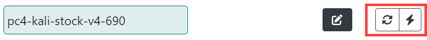
Once the template is in the appropriate state:
- Refresh: (arrows) Refresh queries the state of the VM from the hypervisor. This is useful if you run a
shutdowncommand in the VM and the TopoMojo UI icons haven't updated to reflect the powered-off state of the VM yet. - Deploy: (lightning bolt) Deploys that virtual machine into your workspace.
The deployed virtual machine displays the following additional icons from left to right:
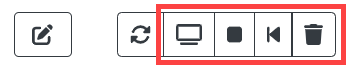
- Console: Opens the console for the virtual machine.
- Stop/Start: Power off/on the VM, but leaves the resource deployed on the hypervisor. Clicking stop results in the hypervisor showing a deployed VM in a powered-off state. Clicking start powers on the deployed VM.
- Revert: Reverts the VM to its last saved state. You lose all changes made since the last commit.
- Delete: Deletes a running VM instance. Before you click delete, make sure you have saved any changes to the disk.
Save
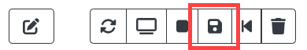
The save icon only when you're using an unlinked disk, since you can't save changes to a linked disk. Clicking save removes the last snapshot and creates a new one with all VM changes.
Lab Document
The Document tab in a TopoMojo workspace is where you write the instructions that correspond with your lab. You author instructions in Markdown using TopoMojo's built-in editor. Authoring in Markdown enables you to create a nicely formatted document without writing HTML.
The TopoMojo editor is a collaborative editor. Multiple people can work on the documentation at the same time. As long as you are "connected" (see the top-right corner) TopoMojo saves your updates to the document.
For more information about Markdown, including the syntax guide, see markdownguide.org.
Inserting an Image
To insert an image into your document:
- Click Images, then click Browse (you can drag and drop too).
- After browsing to upload an image, you should see a preview of the image.
- Place your cursor in the document where you want the image, hover over the image, and click Insert.
Previewing the Doc
To see how your instructions will look to players when they "play" your lab, click the Preview button. The first screen capture shows the Markdown editor. The second screen capture shows the document in preview mode.
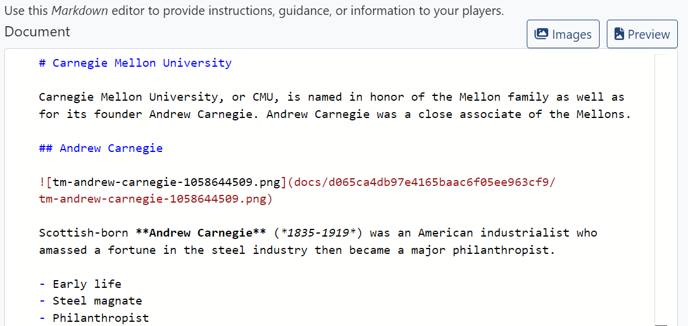
and
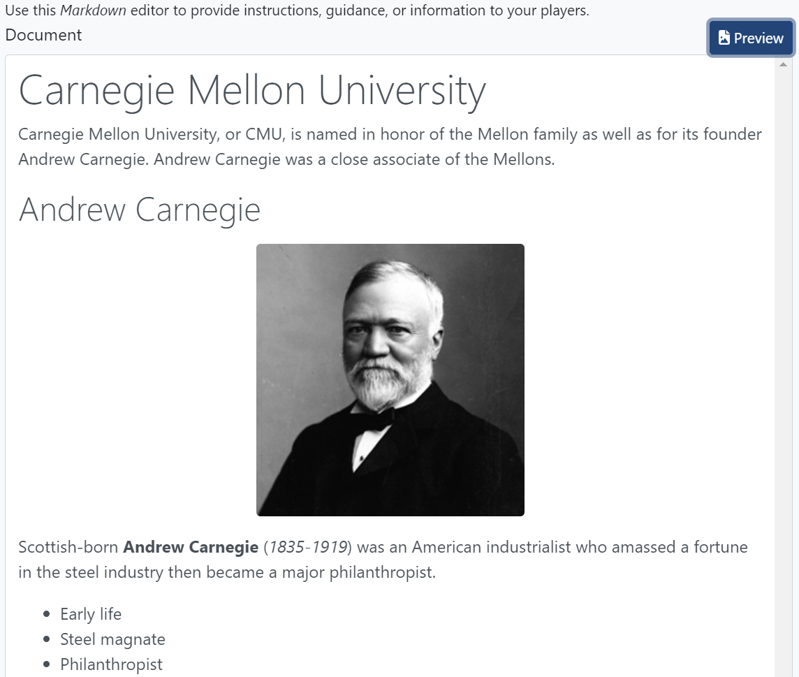
Challenge Tab
The Challenge tab in the TopoMojo workspace is where event organizers integrate Gameboard and TopoMojo to execute a cyber competition. Here, you create random key/values, embed them in a gamespace at deploy time, and ask questions and answers of competitors (players).
Transforms
Transforms allow you to define dynamic variables that TopoMojo generates based on certain criteria or types. Transforms are also a key/value pair definition –- the key is the name of your transform and the value is the type of the transform. The screenshot below shows a transform named "token1" that will have a value of 8 random hexadecimal characters.
screenshot 1:
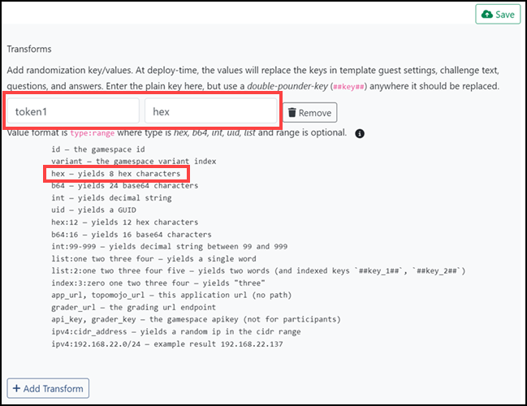
To access transforms, use the referenced "double-pounder-key (##key##)" notation. When TopoMojo deploys a gamespace, the engine generates the random values for all transforms, looks for double-pounder-keys, then replaces them with the randomly generated values for that deployment.
Any of the sections on the Challenge tab (e.g., Transforms, Markdown, Questions, Answers) can contain double-pounder-keys that TopoMojo replaces with transform values at deploy time. You can also use transform double-pounder-keys in the Guest Settings field of a template to inject random variables into VM guest info variables when deploying a gamespace. (Transforms aren't generated when deploying workspace VMs, so the value of the variable will be the double-pounder-key.)
The screenshot below shows the Guest Settings of a VM template configured to use two guest info variables: var1 and token1. Var1 has a value of "test" and token1 will have a random 8-character hexadecimal string assigned when TopoMojo deploys a gamespace.
screenshot 2:
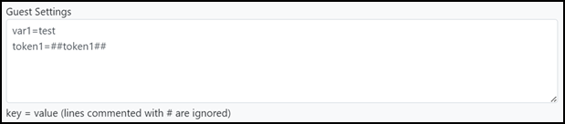
There is a detailed Guest Settings portion of the Workspace documentation.
Markdown
The markdown you enter here gets appended to the gamespace document.
Variants
A variant describes a different version of a challenge. Variants can contain different ISO attachments, different virtual machines, and different questions and answers. Each time TopoMojo deploys a challenge, a variant is randomly selected for the deployment. For example, two competitors can attempt the same challenge, but one competitor may receive variant #1 and the other competitor may receive variant #2. When creating a challenge using variants, make sure all variants test the same competitor skills at the same difficulty level. That is, variant #1 should test the same skills as variant #2 and one variant shouldn't be harder to solve than another variant.
Question Set
Move Up, Move Down, Remove: These functions are self-explanatory. Use them to position the question in the sequence of questions for that set or remove it.
Question: Enter the question you expect the participant to answer here. Your question should be specific, so that there is only one correct answer.
Answer: Enter the correct answer that the competitor must submit to earn a score.
You will see these options when you select Detail.
Hidden: Select Hidden to prevent the question from appearing when playing the challenge. Hidden questions do not appear when playing in TopoMojo or via Gameboard.
Grader: Select the grading type here. The Grader determines if players submitted the correct answer to a question. Select one of four types:
Match: The submission must exactly match what is in the Answer field. Use this when there is exactly one possible answer to a question.MatchAny: The submission must match one of the pipe-delimited answers in the Answer field. Use this when there is more than one possible answer to a question.MatchAll: The submission must match all of the pipe-delimited answers in the Answer field. Use this for questions expecting a list of answers.MatchAlpha: The submission must exactly match what is in the Answer field after the grader removes all non-alphanumeric characters. This is useful if the user might submit symbols that don't affect the validity of an answer. For example,C:/UsersandC:\Usersare both valid answers and the symbols (/vs\) don't matter.
The Grader converts all answers and submissions to lowercase before comparing them to the expected answer. All four grader types are case-insensitive.
Weight
Weight is the percentage of total for this question. The value should be between 0 and 1 or 0 and 100. The weights of all questions within the set must add up to 100% or one (1). TopoMojo calculates zero (0) values evenly.
Example
Providing an example answer helps players understand the required answer format. For instance, sometimes a file needs both the name and the extension, while other times only the name is necessary.
Files
The Files page in the TopoMojo workspace allows you to upload files from your system to TopoMojo to include in your lab. You can use these files as ISOs to attach to VMs in the workspace. If your files aren't already in an ISO file format, TopoMojo wraps them in an ISO after upload.
Note
For ISO uploads to work, TopoMojo needs an NFS (Network File System) datastore presented to vSphere and TopoMojo must be able to access it.
The Files tab in TopoMojo is where you upload ISO files to attach to virtual machines. Supply the ISO you want to attach to your VM. The ISO adds extra resources that the original VM might not include. ISO files are disk images TopoMojo mounts as virtual CD drives on the VM. You want to attach an ISO when you need additional software, datasets, or other resources.
Drag and Drop: Admins drag their ISO file into the box on Files tab or browse to locate it on their own device.
By default, the Local filter only displays ISOs available in the current workspace.
When you upload an ISO file, TopoMojo creates a folder with this GUID--called out in green in screenshot 1 below--in the folder name in the NFS datastore. TopoMojo puts your ISO in that folder. Only the current workspace, that is, your workspace has access to the ISO file.
screenshot 1: GUID and Local filter applied
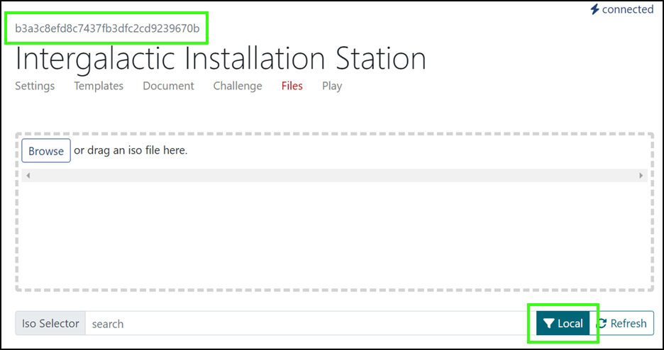
When you remove the Local filter, you can see all of the ISOs in the global folder on the NFS data store. (The folder name will contain a GUID of all zeros.) These global ISOs are available to every workspace in TopoMojo.
You can attach an ISO to a VM in the challenge workspace Templates tab. See the Adding and editing templates section of this guide. When you select an ISO here, TopoMojo attaches the ISO to the VM upon its deployment.
You can also attach an ISO to a VM using the workspace Challenge tab's Variant Detail function. This "dynamic ISO attachment" gives you the ability to attach a variant-specific ISO file to a template. You must specify a target(s) here. See the Variants section of this guide.
Play
The Play page is where you can interact with your lab in the same way others will when they launch your content or "play" through your challenge. Play deploys a read-only copy of all virtual machines in the workspace; this gives the player their own deployed configurations.
Variant: Specify which variant of the challenge you wish to play (if it is a variant challenge).
Max Attempts: The maximum number of submission attempts allowed when answering questions.
Max Minutes: The maximum number of minutes permitted to play before the gamespace expires.
Point Value: The point value assigned for this challenge when used with Gameboard in a cyber competition scenario.
Start: Starts up the gamespace which includes setting the timer, deploying virtual machines, displaying the Markdown document, and making challenge questions available. Individuals get their own Play tab, so when playing, the gamespace environment is unique to you.
Reset: Resets the gamespace.
Administrator Guide
TopoMojo has an admin interface called Admin Dashboard. To access the Admin Dashboard, you'll need the admin role. In the top-right corner, click the Admin button. TopoMojo provides the initial admin role to the first user who authenticates successfully.
Hub Connections
Hub connections informs TopoMojo admins about which users are currently logged into TopoMojo.
Announcement
The Announcement feature allows TopoMojo admins to broadcast important messages to everyone in TopoMojo. Announcements appear in the TopoMojo interface. In the Message field, enter the content of the announcement and click Send.
Import/Export
This is future functionality for the TopoMojo UI. The API equivalent of import/export is available for use.
Janitor
The Janitor service cleans up unused resources (e.g., a workspace VM that has been idle for a long time) in TopoMojo.
Cleanup Report: Provides a log of the Janitor's activity.
Gamespaces Tab
The Gamespaces tab is where the admin can search for, and filter by, active and inactive gamespaces. By default, the search is for active gamespaces. Green indicates active gamespaces and gray indicates inactive gamespaces.
Refresh: Refreshes your search.
Delete Selected: Check the box next to All to select all gamespaces for deletion or check a box next to individual gamespaces to select for deletion.
Gamespaces in the table show the following information:
- Gamespace id or support code in Gameboard (e.g.
e9416013) - Time remaining (if active)
- User who is interacting with (or had interacted with) the gamespace
- Title of the workspace that deployed the gamespace
The screenshot below shows several active and inactive gamespaces (usernames redacted).
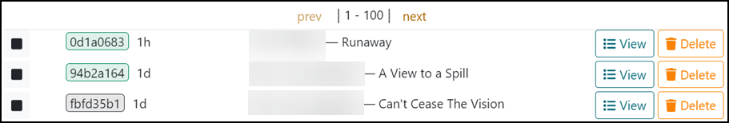
View (Expanded)
View: Selecting View expands the gamespace information where a list of all the VMs associated with the gamespace and their state.
- refresh: Refreshes the VM instance.
- console: Allows you to interact with the VM (a user's gamespace).
- stop: Stops a powered on VM.
- revert: Reverts to last saved state.
- delete: Deletes a running VM instance.
- JSON: Shows detailed information about the gamespace, including: answers to questions, variables associated with the challenge, submitted answers, challenge questions and expected answers, and if the participant answered questions correctly or incorrectly.
- Dispatcher: Used to issue commands to a VM from TopoMojo provided that the TopoMojo agent program is running on that VM. The VM requires an internet connection which allows the agent program to establish a connection with TopoMojo.
targetis the hostname of the VM that you want to run the command on.commandis any command you wish to run. See TopoMojo's GitHub repository for more information on TopoMojo's agent.
Delete
Delete: As you would expect, deletes the gamespace and associated VMs.
Workspaces Tab
The Workspaces tab is where the admin can search for workspaces and perform limited actions. Workspaces are where you build challenges and labs. Here, an admin can view every workspace.
Note
Only users who are admins can view the list of workspaces on the Admin panel. Non-admin users will use the search feature on the left navigation pane.
In the left navigation pane, you can use the Search field to locate a workspace. However, searching here only returns workspaces you created or workspaces others invited you to join.
Create: Create a new workspace from the Admin Workspaces panel. For additional help, see Building a new workspace.
Selecting a workspace takes you the Settings tab of that particular workspace where you can edit it. For additional help on the Settings tab, see Building a new workspace.
The workspace identifier is present here too. The workspace identifier matches the directory name used to store workspace files like unlinked virtual machines, Markdown documents, images, etc. Copying it to the clipboard is useful if you need to use it in a terminal when navigating the filesystem.
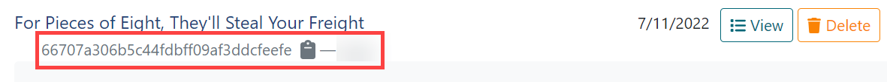
View (Expanded)
Template Limit: Defines the number of VMs that can be in the workspace.
Template Scope: Limits a workspace to using templates that have the given scope.
Audience: Limits who can deploy a gamespace as a workspace.
VMs: Refresh, deploy, view the console, start/stop, revert and delete from here. - Refresh: Queries the state of the VM from the hypervisor. - Deploy: Deploys that virtual machine into your workspace. - Console: Opens the console for the virtual machine. - Stop/Start: Power off/on the VM, but leaves the resource deployed on the hypervisor. Clicking stop results in the hypervisor showing a deployed VM in a powered-off state. Clicking start powers on the deployed VM. - Revert: Reverts the VM to its last saved state. You will lose all changes made since the last commit. - Delete: Deletes a running VM instance.
Templates Tab
The Templates tab is where you can view all of the templates that exist in TopoMojo.
Search: Search for templates by workspace. Notice that you can apply filters here to further narrow down your search. In the screenshot below, the filter is for linked VMs with a parent template of a VM called kali-201901.
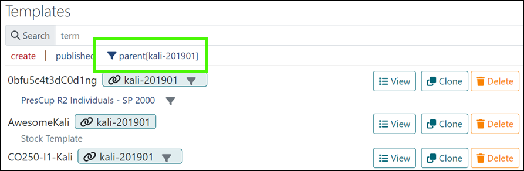
You can filter for specific workspaces here too. Clicking the name of the of the workspace takes you directly to the workspace.
Linked and unlinked templates
The chain link icon next to a template name indicates the VM is linked. Use linked VMs when the prebuilt, stock templates included with TopoMojo meet your needs. Linked VMs save resources when VMs don't require custom configurations when deployed. Changes can't be saved to linked VMs when deployed. Changes can only be saved to unlinked VMs.
Template Properties
Name: The VM name can't contain spaces; TopoMojo will replace spaces in a name with a -.
Description: Not visible to users; use the Description in a way that meets your needs. For example, include VM credentials here.
Networks: A space delimited list of network names. When TopoMojo deploys a VM, it will have one network interface for each of the named networks. TopoMojo creates networks on the hypervisor at VM-deploy time if they don't already exist.
TopoMojo appends the isolation tag of the workspace/gamespace to network names to ensure network isolation.
TopoMojo does not append the isolation tag to persistent/shared networks listed here; the VM connects to the existing shared/persistent network.
For more information on isolation tags, see the Isolation Tag section.
Guest Settings: List key value pairs in the form of key=value to pass data into deployed VMs via VMware guestinfo Variables. The Guest Settings field uses VMware Guest Info Variables to inject content into virtual machines. Place key/value pairs here. The key is the name of the guest variable you want to define, and the value is value, information, setting, of the variable. For example, var1=test is a guest setting named "var1" with a value of "test".
Replicas: Replicas indicates how many copies of the VM get deployed in a gamespace. This will vary according to your needs. You may need two copies of the VM per gamespace or you may need 10. E.g.: two users are working a TopoMojo lab together; we want to set Replicas to 2 to ensure that each user has their own VM to work with. If set to 1, then the two users could encroach on each other's work on the single VM.
When deciding how many replicas you need, keep resources in mind. If, as in our example above, we only need two copies of the VM at any given time don't set Replicas to 5. TopoMojo will deploy five, two will get used, and the other three won't get used.
-1: Setting Replicas to -1 means TopoMojo will deploy one VM template copy per user. If there are two users, then TopoMojo deploys two copies; if there are 10 users, then 10 copies. TopoMojo does not deploy extra VMs. Use this setting in conjunction with the Gameboard app, where Gameboard informs TopoMojo on how many copies to make based upon the Gameboard team size.
The value set in Replicas only applies to the template you are editing; not every template in the workspace. So, if you want the same number of copies deployed in a gamespace for each template, you'll have to edit each template individually.
Machines Tab
This tab lists all VMs TopoMojo is tracking and the gamespaces they belong to, without using the vSphere Client.
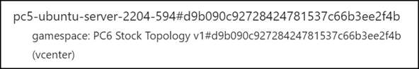
gamespacetells you this is a gamespace VM.pc5-ubuntu-server-2204-594is the name of the VM.#d9b090c92728424781537c66b3ee2f4bafter the hash tag is the gamespace GUID.
The Machines tab is helpful when you want to find all the VMs related to a gamespace (e.g., PC6 Stock Topology v1 in the screenshot above). You can copy the gamespace GUID and paste it into the Search field. Note that you cannot interact with the VMs from this tab.
"Orphaned" VMs
VMs tagged with __orphaned are VMs that still exist; however, they are not connected to anything. TopoMojo may have attached these VMs to an expired gamespace, and when it tried to remove them vSphere failed to respond. Orphaned VMs should be manually deleted in vSphere.
To identify orphaned VMs, search for "orphaned" in the Search field, identify the VMs to clean up in vSphere, and delete them. Once deleted in vSphere, they won't appear on the Machines tab again.
Users Tab
The Users tab shows all current TopoMojo users. You can create new users here and assign them permissions. The Search feature allows TopoMojo admins to search on the name of a TopoMojo user. To search for a user across all of TopoMojo, enter the term into the Search field or filter by role or audience.
Recall from workspace Settings that "audience" is a list of clients who can launch the workspace as a gamespace. Selecting an audience filter results in users who are part of that audience.
View: Select View to see the properties for the user.
Delete: Deletes the user.
Roles
All permissions are additive; meaning a Creator can do everything a Builder can do and an Observer can do everything a Builder and Creator can do.
- Admin: Highest level of permission in TopoMojo; can do everything the other roles can do.
- Observer: Allows a user to view and use the Gamespaces tab. However, the scope of the user (see below) limits access too. An observer can deploy gamespaces with a matching audience and these are the only gamespaces the user can observe.
- Creator: Can have as many workspaces and templates as wanted.
- Builder: Can connect to bridge-net.
- User: No extra permissions in TopoMojo. This is the TopoMojo default.
- Disabled: No permissions in TopoMojo.
Create a New User
Name: Enter a new user name here.
Scope: A space-delimited list of administrator-defined groups the user belongs to. Administrators can define a scope with any name here. A user's scope determines which workspaces they have permission to deploy gamespaces from. Users can only deploy a gamespace from a workspace if the user has a scope that matches an audience defined in the workspace. See also: Building a new workspace.
Workspace Limit: The maximum number of workspaces this user can manage.
Gamespace Limit: The maximum number of concurrent gamespaces allowed for this user.
Gamespace Max Duration: The maximum amount of minutes allowed for a gamespace.
Gamespace Cleanup Grace time: The number of "grace" minutes between the time the gamespace expires and when TopoMojo tears it down.
Generate ApiKey: Generate API keys here. This allows users to programmatically interact with the TopoMojo API without needing to log in.
Log Tab
The Log tab is useful from the admin point of view when trying to troubleshoot. The Log tab only shows errors here, not every log line.
Copy and Paste
The procedures below show you how to:
- Copy text from a local machine (an out of game computer) and paste it into an in game virtual machine
- Copy text from a virtual machine and paste it into a local machine
The VM console cog icon:
From Local ("Out of Game") to "In Game"
- On your local machine select, then copy, the content you want to place into a launched virtual machine.
- In the VM console tab, select the cog icon (the Tools). Under Clipboard paste in the clip using right-click Paste or
ctrl+V. - In the VM, select where you want the copied text to go (this can be a new file or an open application, etc.).
- Under Clipboard, click Paste. This inserts the copied content into the virtual machine. 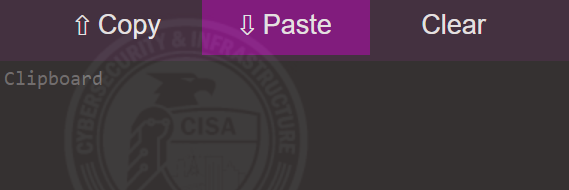
From "In Game" to "Out of Game"
- On the VM, select the content you would like to copy. Copy the content first to the VM's clipboard (right-click Copy or
ctrl+C). - Once you've copied your text to the VM clipboard select the cog icon (the Tools), place your cursor in that clipboard, and click Copy. This transfers the VM clip to your local clipboard.

- On your local machine, paste the copied text into an application using right-click Paste or
ctrl+V.